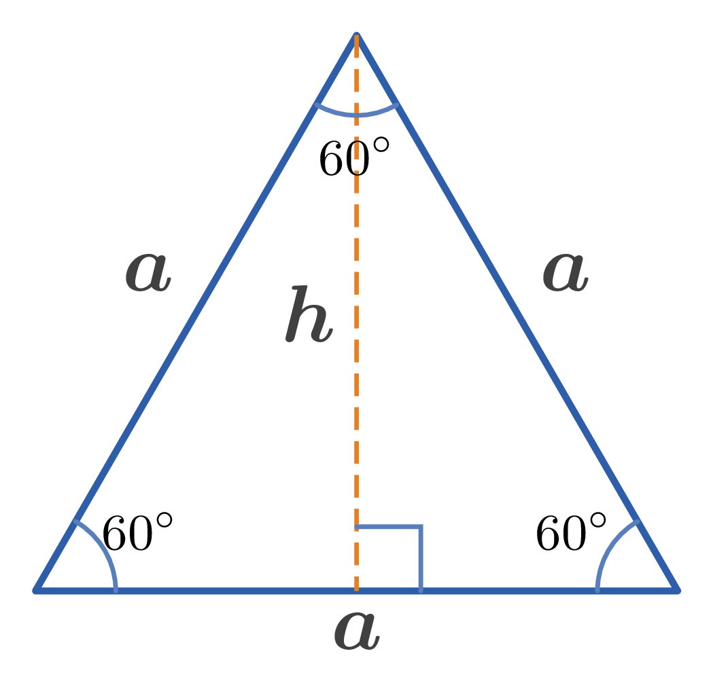

Side of a equilateral triangle: $a$
Altitude: $h$
Radius of circumscribed circle: $R$
Radius of inscribed circle: $r$
Perimeter: $L$
Area: $S$
1. $h=\dfrac{a\sqrt{3}}{2}$
2. $R=\dfrac{2}{3}h=\dfrac{a\sqrt{3}}{3}$
3. $r=\dfrac{1}{3}h=\dfrac{a\sqrt{3}}{6}=\dfrac{R}{2}$
4. $L=3a$
5. $S=\dfrac{ah}{2}=\dfrac{a^2\sqrt{3}}{4}$